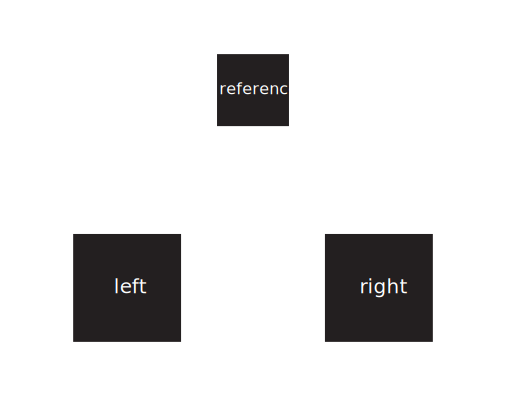

<!DOCTYPE html>
<html>

<head>
    <title>Triplet Embeddings: Textures</title>
    <script src="https://unpkg.com/jspsych@7.3.4"></script>
    <link href="https://unpkg.com/jspsych@7.3.4/css/jspsych.css" rel="stylesheet" type="text/css" />

    <script src="https://unpkg.com/@jspsych/plugin-html-keyboard-response@2.0.0"></script>
    <script src="https://unpkg.com/@jspsych/plugin-image-keyboard-response@1.1.0"></script>
    <script src="https://unpkg.com/@jspsych/plugin-fullscreen@1.1.0"></script>
    <script src="https://unpkg.com/@jspsych/plugin-survey-multi-select@1.1.0"></script>
    <script src="https://unpkg.com/@jspsych/plugin-survey-text@1.1.0"></script>
    <script src="https://unpkg.com/@jspsych/plugin-html-button-response@1.1.0"></script>
    <script src="https://unpkg.com/@jspsych/plugin-call-function@1.1.0"></script>
    <script src="https://unpkg.com/@jspsych/plugin-preload@1.1.0"></script>
    <script src="https://unpkg.com/@jspsych-contrib/plugin-pipe"></script>

    <style>
    </style>
</head>

<body>
</body>
<script>

    //init jsPsych and set up
    var jsPsych = initJsPsych({
        show_progress_bar: false,
        on_data_update: function () {
            jsPsych.data.addProperties({ worker_id: urlvar.workerId });
            timeline.push(save_data);
        },
        on_finish: function () {
            jsPsych.data.addProperties({ worker_id: urlvar.workerId });
            //jsPsych.data.get().localSave("csv", filename);
            timeline.push(save_data);
        },
        max_load_time: 120000,
    });

    // Create timeline variable //
    var timeline = [];

    // Set background color to gray //
    document.body.style.backgroundColor = "rgb(128,128,128)"

    //random IDs for file names
    const subject_id = jsPsych.randomization.randomID(10);
    const filename = `${subject_id}.csv`;

    var urlvar = jsPsych.data.urlVariables();

    timeline.push({
        type: jsPsychFullscreen,
        fullscreen_mode: true,
    });

    //let condition;
    //let selected_stimuli;
    //let stimuli_timeline_variables;

    const filled_stimuli = [
        "stimuli/1_fill_zoom_left.svg", "stimuli/1_fill_zoom_right.svg",
        "stimuli/2_fill_zoom_left.svg", "stimuli/2_fill_zoom_right.svg",
        "stimuli/3_fill_zoom_left.svg", "stimuli/3_fill_zoom_right.svg",
        "stimuli/4_fill_zoom_left.svg", "stimuli/4_fill_zoom_right.svg",
        "stimuli/5_fill_zoom_left.svg", "stimuli/5_fill_zoom_right.svg",
        "stimuli/6_fill_zoom_left.svg", "stimuli/6_fill_zoom_right.svg"
    ]

    const unfilled_stimuli = [
        "stimuli/1_unscale_zoom_left.svg", "stimuli/1_unscale_zoom_right.svg",
        "stimuli/2_unscale_zoom_left.svg", "stimuli/2_unscale_zoom_right.svg",
        "stimuli/3_unscale_zoom_left.svg", "stimuli/3_unscale_zoom_right.svg",
        "stimuli/4_unscale_zoom_left.svg", "stimuli/4_unscale_zoom_right.svg",
        "stimuli/5_unscale_zoom_left.svg", "stimuli/5_unscale_zoom_right.svg",
        "stimuli/6_unscale_zoom_left.svg", "stimuli/6_unscale_zoom_right.svg"
    ]

    const unfilled_scaled = [
        "stimuli/1_scale_zoom_left.svg", "stimuli/1_scale_zoom_right.svg",
        "stimuli/2_scale_zoom_left.svg", "stimuli/2_scale_zoom_right.svg",
        "stimuli/3_scale_zoom_left.svg", "stimuli/3_scale_zoom_right.svg",
        "stimuli/4_scale_zoom_left.svg", "stimuli/4_scale_zoom_right.svg",
        "stimuli/5_scale_zoom_left.svg", "stimuli/5_scale_zoom_right.svg",
        "stimuli/6_scale_zoom_left.svg", "stimuli/6_scale_zoom_right.svg"
    ]

    // Prompt for participant ID
    var participant_id = prompt("Please enter the participant ID:");

    // Ensure input is valid
    if (!participant_id || isNaN(participant_id)) {
        alert("Invalid participant ID! Please reload the page and enter a numeric ID.");
        throw new Error("Invalid participant ID.");
    }

    console.log("Participant ID:", participant_id);
    // Calculate the condition index based on participant ID (0 for filled, 1 for unfilled)
    var condition_index = parseInt(participant_id) % 3;
    console.log("Condition index:", condition_index);


    // Assign the correct condition based on the condition index
    var selected_stimuli;
    var condition_name;
    if (condition_index === 0) {
        selected_stimuli = filled_stimuli;
        condition_name = "filled";
    } else if (condition_index == 1) {
        selected_stimuli = unfilled_stimuli;
        condition_name = "unfilled";
    } else {
        selected_stimuli = unfilled_scaled;
        condition_name = "unfilled_scaled";
    }

    // Randomize the stimuli order
    var randomized_stimuli = jsPsych.randomization.shuffle(selected_stimuli);

    // Add participant ID and list name to data
    jsPsych.data.addProperties({
        participant_id: participant_id,
        condition_name: condition_name
    });

    // Preload selected stimuli
    timeline.push({
        type: jsPsychPreload,
        images: randomized_stimuli
    });

    var instructions = {
        type: jsPsychHtmlKeyboardResponse,
        stimulus: `<div style="text-align: center;">
            <p style="font-size: 24px; margin-bottom: 1px; line-height: .1;"> During this experiment you will be presented with a series of images. </p>
            <p style="font-size: 24px; margin-bottom: 1px; line-height: .1;"> There will be one image at the top (labeled 'reference' image here) </p>
            <p style="font-size: 24px; margin-bottom: 1px; line-height: .1;"> and two images below (labeled 'left' image and 'right' image here). </p>
            <p style="font-size: 24px; margin-bottom: 1px; line-height: .1;"> Your task is to decide which of the two bottom images (left or right) appears most similar to the reference image on top. </p>
            <br>
            <br>
            <p style="font-size: 24px; margin-bottom: 1px; line-height: .1;"> If you think the LEFT image appears more similar to the reference image, press the LEFT ARROW KEY. </p>
            <p style="font-size: 24px; margin-bottom: 1px; line-height: .1;"> If you think the RIGHT image appears more similar to the reference image, press the RIGHT ARROW KEY. </p>
            <br>
            <br>
            
            <br>
            <br>
            <p style="font-size: 24px; margin-bottom: 1px; line-height: .1;"> This task will take about 5 minutes to complete. </p>
            <br>
            <p style="font-size: 24px; margin-bottom: 1px; line-height: .1;"> We are interested in your initial impression so please use your first intutition. </p>
            <br>
            <p style="font-size: 24px; margin-bottom: 1px; line-height: .1;"> If you have any questions, please ask them now, otherwise you may press the left or right arrow key to begin. </p>


            </div>
            `
    };

    timeline.push(instructions);

    // Main task trials
    var trials = randomized_stimuli.map(stimulus => {
        return {
            type: jsPsychHtmlKeyboardResponse,
            //stimulus: stimulus,
            /*stimulus: `
            <div style="text-align: center;">
                <object type="image/svg+xml" data="${stimulus}" style="height:600px;"></object>
            </div>
        `,*/
            //adjust size of stimuli here depending on monitor size
            stimulus: `
  <div style="text-align: center;">
     
  </div>
`,
            choices: ['ArrowLeft', 'ArrowRight'],
            prompt: "",
            stimulus_duration: null,
            response_ends_trial: true,
            post_trial_gap: 500,
            on_finish: function () {
                // Manually clear the display
                document.querySelector('#jspsych-content').innerHTML = '';
            },
            data: {
                condition: condition_name,
                stimulus: stimulus
            }
        };
    });

    var break_1 = {
        type: jsPsychHtmlKeyboardResponse,
        stimulus:
            "You have completed 1 of 5 blocks of trials. Please press either arrow key to continue to the next blcok when you are ready."
    };

    var break_2 = {
        type: jsPsychHtmlKeyboardResponse,
        stimulus:
            "You have completed 2 of 5 blocks of trials. Please press either arrow key to continue to the next blcok when you are ready."
    };

    var break_3 = {
        type: jsPsychHtmlKeyboardResponse,
        stimulus:
            "You have completed 3 of 5 blocks of trials. Please press either arrow key to continue to the next blcok when you are ready."
    };

    var break_4 = {
        type: jsPsychHtmlKeyboardResponse,
        stimulus:
            "You have completed 4 of 5 blocks of trials. Please press either arrow key to continue to the next blcok when you are ready."
    };


    //timeline = timeline.concat(trials);

    for (let i = 0; i < 5; i++) {
        // Add the trials for this block
        timeline = timeline.concat(trials);

        // Add a break *after* the block if it's not the last one
        if (i < 4) {
            let break_message;
            switch (i) {
                case 0:
                    break_message = break_1;
                    break;
                case 1:
                    break_message = break_2;
                    break;
                case 2:
                    break_message = break_3;
                    break;
                case 3:
                    break_message = break_4;
                    break;
            }
            timeline.push(break_message);
        }
    }


    const save_data = {
        type: jsPsychPipe,
        action: "save",
        experiment_id: "JlELTe7cri0J",
        filename: filename,
        wait_message: 'Please wait a moment while the next page loads.',
        data_string: () => jsPsych.data.get().csv(),
        on_finish: (data) => {
            console.log("Data saved:", data);
        },
        on_load: () => console.log("Attempting to save data..."),
        on_error: (error) => console.error("Error during data save:", error)
    };


    /* ---------------------------------- End of main experiment ---------------------------------------- */

    //Exit fullscreen
    timeline.push({
        type: jsPsychFullscreen,
        fullscreen_mode: false
    })

    //Assign index values to the trials once they are all in the timeline
    /*timeline.forEach(function (trial, index) {
        trial.index = index;  // Assign an index to each trial
    });*/

    timeline.push(save_data);

    const thank_you = {
        type: jsPsychHtmlKeyboardResponse,
        stimulus: "<p>Thank you for participating! Please let the experimenter in the room know you have finished the experiment."
    };

    timeline.push(thank_you);

    // Run the experiment with the wrapped timeline
    jsPsych.run(timeline);

</script>

</html>